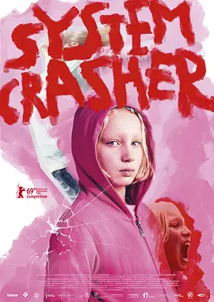

7.2
系统破坏者
System Crasher
2019
德国
评分 7.2
导演:
诺拉·芬沙伊德
演员:
海伦娜·泽格尔 / 阿尔布雷希特·舒赫 / 加布里拉·玛利亚·施迈德 / 丽莎·哈格迈斯特 / 维多莉亚·塔拉特曼斯多夫
类型:
剧情
剧情简介
九岁的本尼被社会福利系统层层转交，她小小的身影在机构走廊里疾奔，每一次开门都伴随着嘶喊与挣扎。她拥有一种无法被压制的冲劲，像一股随时可能爆裂的能量，让老师、社工和寄养家庭都无力承接。护理人员试图靠近她，却常常被她突如其来的情绪风暴逼得后退。她的愤怒来得猛烈，也消散得迅速，仿佛连她自己都难以掌控。在本尼的混乱行为背后，是对母亲深切而执拗的渴望。每当社工向她解释不能回家的原因，她的脸上便绷出一种令人心碎的防备。她在公交车上盯着每一位女性的侧影，试图从陌生人身上寻找熟悉的温度；在寄宿中心的夜晚，她紧抱着毯子蜷缩在角落，企图用稚嫩的声音呼唤一个她明知不会出现的回应。迈克是一名专门处理高风险儿童的照护员，他被派来陪伴本尼。他在树林徒步中与她对峙，在简易厨房里耐心示范生活规则，也在她暴怒时用尽全力稳住局面。他看见她的猛烈，也看见她脆弱的缝隙。本尼偶尔露出的笑意像罅隙间的光，让他相信她仍有机会被救起。然而系统的限制、母亲的拒绝、机构间不断的转移，让本尼的情绪波涛越来越无处安放。她在街头与校园里不断爆发，行为有时失控得近乎自伤，也让周围的人心惊不已。她像一面被打碎又不断重新拼起的玻璃，每一次触碰都伴随着伤害的风险。在一次次尝试与失败之间，本尼挣扎着寻找一个能让她停下来的地方，而陪伴她的人们也在思考：究竟是她无法融入世界，还是世界没有给她留下任何能够安身的位置。